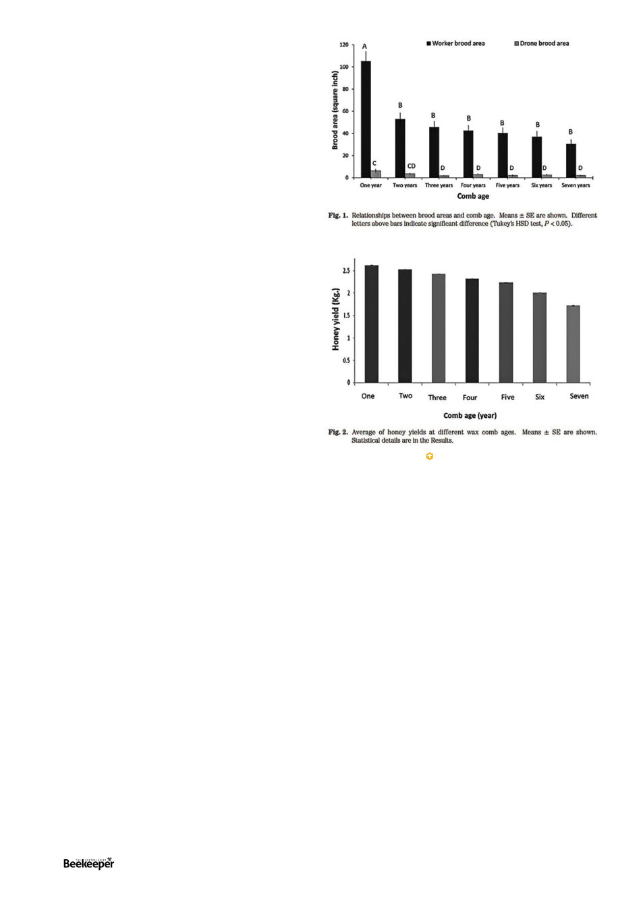

more honey. The paper authors hypothesise that the new
comb hives produce more honey because the larger bees
are more capable at collecting it, which brings us to the
next study.
Another 2020 study3 in Egypt looked at the
morphological effects on bees of being born into old
comb. In the introduction alone to this paper there are
some frightening descriptions of the reasons why old
brood comb is darker and has smaller cells:
“Some contaminants are fungal and bacterial
spores, pesticides and heavy metals (Berry and
Delaplane 2001). Also older brood combs are
more likely to contain hive debris and to have
thicker propolis layers, which makes them darker
colored (Koenig et al. 1986). In addition the
diameters of the cells become narrow as the comb
age increases because of the accumulation of silks
and fecal materials produced by the developing
larvae (Hepburn and Kurstjens, 1988).”
Well that doesn’t sound appetising (unless, again,
you’re a small hive beetle). Some more interesting quotes
about older studies:
“Furthermore, many previous studies indicated
that the usage of old combs parallels the
appearance of a variety of brood diseases;
for instance chalkbrood (Koenig et al., 1986),
American foulbrood (Gilliam, 1985) and nosema
(Bailey and Ball, 1991) are more likely to occur in
hives with old combs. Also older combs appear
to contain more brood pheromones, which can
prevent the queens from laying eggs because
they regard that cells are already used (Free and
Winder, 1983)”
This study was performed by the same Egyptian university
as the previous one I mentioned (it seems most of the earlier
brood age studies were performed in Europe or America
in the 80s and the topic in those areas is now perhaps
regarded as covered, whereas in the last few years a circle
of researchers in the Middle East have been interested in
it. I preferred to spend my time reading the recent studies
and relying on their citations of the older ones). Some
things not stated in the studies but that I happen to know
from my own experience visiting apiaries in Egypt: the
reason they rarely mention more than 7 frames, and they
don’t distinguish between brood and nonbrood frames is
because hives rarely get bigger than a 10 frame box there,
even spinning honey out of brood frames.
In this study they ran 12 hives, within which each one
had seven frames aged 0 through 7 years (ie each hive
had a frame of each age). Thus they could study the bees
emerging from each aged comb without it being affected
by larger systemic effects of comb age in the colony.
Emerging bees from specifically aged combs were collected,
measured and dissected.
One square inch of comb was cut out and carefully
weighed. In the less-than-a-year-old combs this weighed
1.69g, the weight steadily rising until the 7 year old comb
weighs 8.51g per square inch, a five-fold increase in mass
(which would all certainly be slum gum when melted down,
hence the much greater ratio of slumgum to wax when
you render old comb). Internal volume of cells is roughly
halved from fresh comb to 7 year old comb, and inner cell
diameter reduced from 6mm to 4.8. This obviously results
in smaller bees.
Bees emerging from the first year comb weighed in at
122.89mg, bees emerging from 7 year old comb weighed
an average of 68.06mg (Nearly half the size, only 55.38% as
big!). The proboscus (tongue) was only 72% as big, which
could severely limit the nectar available to them. Forewing
78% as big, no doubt limiting flight range or efficiency.
Every limb and organ was, in short, much smaller.
Which brings us to the final of these recent studies,
again by the same mob out of Kafrelsheikh University,
Egypt.4 32 hives were divided into four equal groups and
combs replaced with combs of 1, 2, 3, or 4 years of age,
like the last mentioned study each hive was given an equal
mix of ages, the order of the combs changed in the various
groups to eliminate effects from being on the outside
frame versus inside. At the beginning of the experiment
all the queens were removed so as to cause emergency
queen cells to be made. Unlike swarm cells, emergency
queen cells are made from building out the queen cell
around an existing egg so the size and qualities of the
underlying cell structure will have a significant impact.
Most queen cells were constructed the second day after
removal of the queens. Number of queen cells constructed
directly corresponded with age of comb, averaging 15.55
From Shawer 2020.
16 |
Celebrating 125 years | Vol. 126 | No. 01